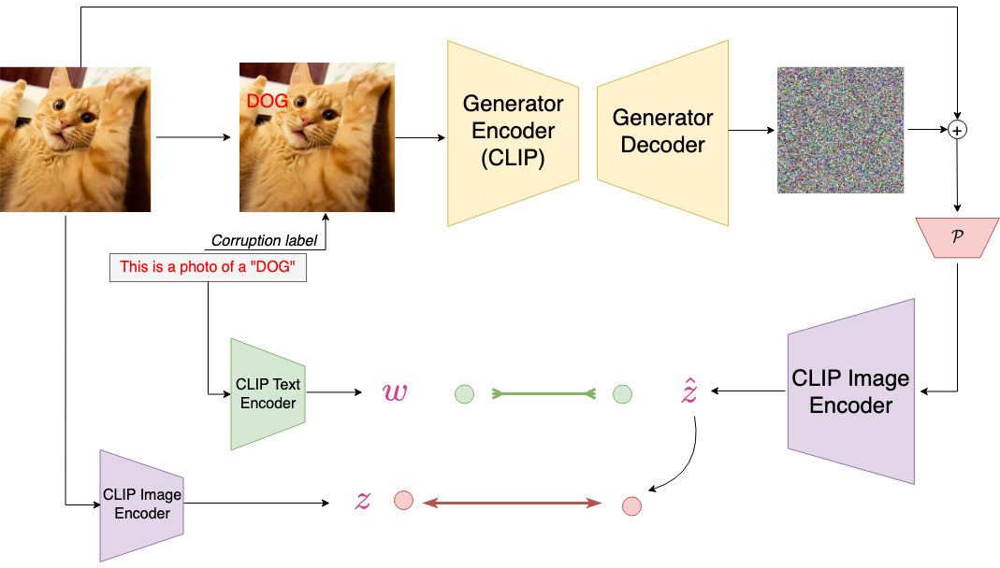

|
|

|
Jameel Hassan, Hanan Gani, Noor Hussein, Uzair Khattak, Muzammal Naseer, Fahad Khan, Salman Khan NeurIPS, 2023 paper website |
Mohamed Fazli Imam, Rufael F Marew, Jameel Hassan, Mustansar Fiaz, Alham Fikri Aji, Hisham Cholakkal arXiv, 2024 Vision Language models; Self-supervised learning paper |
Analyzed and established the potential of language supervision using CLIP for 3D point-cloud instance segmentation and its effectiveness for open-world setting. Vision Language models; 3D instance segmentation code poster |
 |
Designed an adversarial attack on the CLIP model using language itself as an adversary . Vision Language models; Adversarial robustness code |
Adapted the YOLOv8 model for long tail object detection on the iSAID aerial images dataset , using a prototype based contrastive loss with dynamic calibration for long tail nature of dataset. Long tail distribution; Object detection code |
Designed a parallel and distributed implementation of the ViT-B/16 architecture with a pipeline paralleled version, combined with distributed data parallel strategy. Parallel and Distributed Machine Learning, Pipeline parallelism code |
[Discontinued due to resource constraints]. Attempted an architectural desing to lift 2D image face restoration models to video restoration whilst retaining the image restoration model. Video restoration |
|
|